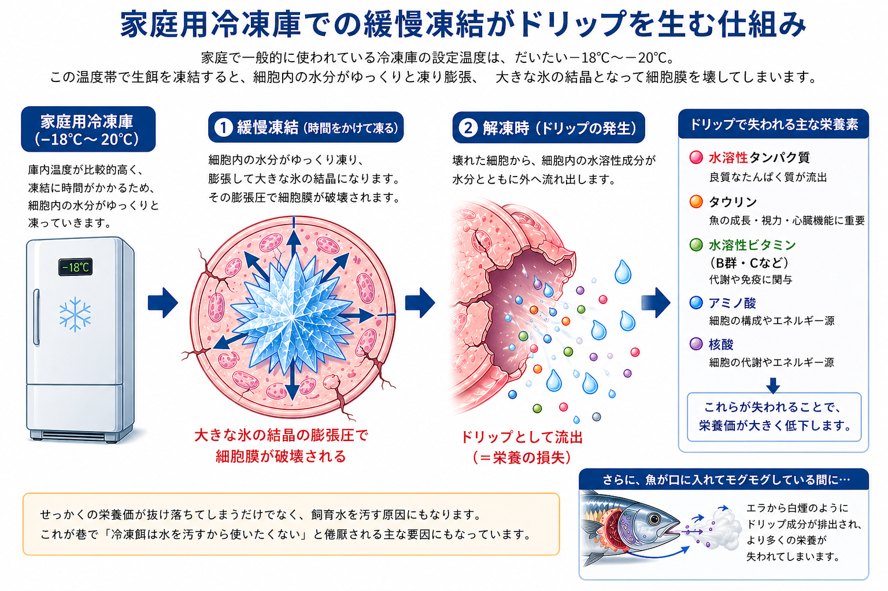

【海水魚の餌】 第６回：
冷凍餌加工に伴うリスクⅠ ― 家庭用冷凍庫・菌・酸化の問題
Published: 2026.02.19
さて、前回までの記事では人工飼料の限界（デメリット）に触れ、
海水魚の餌としての様々な生餌（なまえさ）のメリット のうちいくつか紹介してきました。
今から約10年前、私は人工飼料中心の給餌から“生餌（冷凍餌）メイン”のスタイルへと切り替えました。いろいろと悩み、学び、納得したうえで、8年前からは現在の「CAS冷凍餌料中心」のスタイルに落ち着いています。
冷凍餌をメインフードとした給餌の十分な実績も積んだと感じており、その上で筆を執っています。
──と、ここまで散々、海水魚の餌としての生餌を褒めまくってきたわけですが……
今回はその反対側──生餌のデメリットについて少しお話してみたいと思います。
私が８年前に「自家製冷凍ハンバーグ」や「自作餌付け用練り餌」の使用を全面的に打ち切った理由こそが話題のメインになります。
いろいろ調べて学ぶうちに、自作することで起きるさまざまなリスクに気づいてしまったからです。
長くなってしまったのでⅠ～Ⅲに分けています。
前回までの人工餌の限界や生餌のメリットについて読んで頂いてから
こちらを読み進めて頂けると理解が進みやすいかと思いますのでぜひ。
１．冷凍餌の登場──劣化を遅らせる“現代の知恵”
海産魚介類を素材とした生餌（なまえさ）において、
最大のデメリットは何といっても「劣化の早さ」にあります。
そして
・水揚げから時間が経過するほど
・人の手（＝加工）が多く加わるほど
リスクは加速度的に増えていきます。
この2つの要素が、生餌の質に直接的なマイナスの影響を与えるという点です。
■活餌も、時間が経てば“栄養価が落ちる”
たとえば水揚げしたての活餌（餌生物が生きている状態）であれば、
以前ご紹介したような生餌ならではの栄養的メリットは、ほぼ理想的な状態に近いと思います。
ですが、生きているからといって安心ではありません。
水揚げから時間が経過すると、餌生物の代謝によって内部の栄養がどんどん消費されてしまうため、栄養価は徐々に下がっていきます。
この問題を避けるには、ストック中の餌生物にも餌を与え続ける必要があるという手間が発生します。
■死餌も、時間とともに変性する
いっぽう、生餌として与える餌生物が死んでいる状態（死餌）だった場合も、水揚げ直後であれば栄養的には理想的な状態に近いでしょう。
しかし、そこから時間が経てば経つほど、「分解」「酸化」「腐敗」
といった変化によって、風味や栄養価がどんどん変性していきます。
■冷凍保存は、その“劣化スピード”を遅らせる手段
そこで生餌の最大のデメリットを抑えてくれる立役者登場、
現代人の知恵──「冷凍保存」です。
変性を遅らせる“時間稼ぎ”の手段として、とても重要な役割を果たしています。
ここからは
生餌の「劣化の速さ」をカバーしてくれる──
「冷凍餌」の話が中心になります。
一方でその冷凍餌も人の手が加わる（加工）事で起こるリスクが増えて行きます。
２．冷凍機の性能 ── 家庭用冷凍庫を過信しちゃいけない
冷凍機の性能によって、
生餌の品質も栄養価も変わってくるのをご存じでしょうか？
この章はそんな切り口でお話します。
■家庭用冷凍庫
家庭で一般的に使われている冷凍庫の設定温度は、
だいたい−18℃〜−20℃。
この温度帯で生餌を凍結すると、細胞内に含まれる水分がゆっくりと凍り膨張、大きな氷の結晶となって細胞膜を壊してしまいます。
細胞膜が破壊されると、解凍したときに細胞内の水溶性栄養素が水分と一緒に外に流れ出てしまう。それがいわゆる「ドリップ」と呼ばれる現象で、
せっかくの栄養価が抜け落ちてしまうだけでなく、飼育水を汚す原因にもなります。
これが巷で「冷凍餌は水を汚すから使いたくない」と倦厭される主な要因にもなっています。

これでは大切な「水溶性タンパク質」や「タウリン」「水溶性のビタミン（Ｂ群・Ｃなど）」「核酸」などが、魚に与える前にドリップとして失われ・・・
さらに、魚が口に入れてモグモグしてる間に、エラから白煙のように排出もされてしまいます。
【私が自家製ハンバーグや冷凍練り餌を打ち切った理由その１】
家庭用冷凍庫で凍結する事で栄養価が減ってしまうなんて、当初は想定していませんでした。
■業務用高性能冷凍機
一方、食品業界で使われている業務用の高性能冷凍機器の進化はすごいです。
マイナス30℃〜50℃といった超低温帯で、超急速に凍らせることで細胞を壊さず冷凍する技術が使われています。
最近では「CAS凍結（Cells Alive System）」や「プロトン凍結」など、
更にドリップを極限まで減らす“高付加価値冷凍機”がどんどん開発されています。（しかし導入費用もすさまじく数百万円〜数千万円単位もザラとか）
アクア用冷凍餌メーカーさんが冷凍機器にどれほど投資しているかは不明ですが
それにより冷凍餌の品質・栄養価に違いが出ます。
ですので市販の冷凍餌を購入する際も、冷凍方法が公開されてる商品を選ぶのが賢明でしょう。
３．衛生状態の問題―食中毒に要注意
この章では衛生面で起こるリスクについてお話いたします。
■冷凍で菌は死なない
実は、冷凍しても細菌は死なないのはご存じでしょうか？
「冷凍＝殺菌」だと思われがちですが、これは大きな誤解で
元々魚介類に付着している常在菌（ビブリオ菌など）や、手や調理器具に付着している雑菌（大腸菌・腐敗菌など）は、残念ながら冷凍しても死滅しません。
春から夏にかけて人でも食中毒の危険性が高まる時期です。
生鮮食品についての取り扱いには十分注意するよう、行政から各種注意喚起が発信されているのを見たことがある方も多いはずです。
人の生鮮食品の取り扱いや加工には食品衛生法にもとづき「食品衛生責任者」や「食品衛生管理者」などを置くことが義務化されており、国が定めた施設基準を満たした営業許可施設にて食品衛生基準を守り、食中毒などの防止に努め、食の安全が守られている。そんな流れなのはご存じの方も多いと思います。
一方、魚用の冷凍ハンバーグの製造工程を想像してみてください。
生の魚介原料を手で触ったり、包丁で刻んだり、フードプロセッサーで細かく砕いたり、攪拌したり……。
この時の加工場の衛生状態が、その冷凍餌の安全性を大きく左右するでしょう。
ですので、自宅で自家製冷凍ハンバーグや冷凍練り餌（たとえばアサリと人工飼料を混ぜたもの）を作る場合は要注意です。
凍結前に不衛生な環境で加工すると、冷凍前に混入した微生物（ビブリオ菌・大腸菌・腐敗菌など）が、解凍後に再び急速に増殖し、腐敗や食中毒の原因になる可能性があるからです。良かれと思って作った自家製餌で、下手をすると自分の魚を細菌性食中毒で死なせてしまうことがあるかもしれません。
参考サイト： 冷凍と微生物の死滅
上記の急性毒性以外に慢性毒性を示す例もあります。
ヒスタミンをつくる細菌（ヒスチジン脱炭酸菌）は、魚の鮮度を落とすタンパク質系腐敗菌の一種で、見た目では分からないまま、毒性物質（ヒスタミン）を蓄積させる“隠れ腐敗菌”と言える存在です。
人でも食中毒の原因になる事は広く知られています。
自家製冷凍ハンバーグなど刻んで混ぜると、細菌の酵素（ヒスチジン脱炭酸酵素）によって原料中のヒスチジンがヒスタミンに変化する可能性が高まります。
ヒスタミンは魚にとっても慢性毒性（摂餌率の低下、成長抑制、腸のダメージ、肝障害など）を引き起こす可能性があることが、水産養殖の研究で指摘されています。（Zi-Yan Liu et al.,2021)ほか
こうした目に見えない変化でも、長期的には健康に悪影響を及ぼすリスクがあります。
【私が自家製ハンバーグや冷凍練り餌を打ち切った理由その２】
国の食品衛生基準を見るととてもとても真似できないくらい厳しいんですね。それくらいしないと生ものからの細菌性食中毒を克服出来ないのであれば？ 作らない選択肢以外思いつきませんでした。
４．冷凍保存中の酸化の問題
家庭用の冷凍庫では、実は酸化を完全に止めることはできません。
進行は遅くとも、確実に進み続けていきます。
また、餌付け用練り餌や自家製冷凍ハンバーグなどは
刻んだり・練ったりすることで、原料と原料の隙間に空気が入りこんで
酸素に触れる表面積が飛躍的に増加し、酸化が加速する事になります。
さらに、冷凍焼けで表面の水分が抜けると、原料が酸素に直接触れやすくなり酸化が進行しやすくなります.つまり「乾燥」と「酸化」は別々の問題ではなく、互いに悪影響を与えながら食品の劣化を加速させる関係になってしまいます。
■脂質の酸化と「過酸化脂質」のリスク
特に脂質（DHAなど）は酸化しやすく、酸化によって毒性の強い過酸化脂質に変化してしまいます。過酸化脂質を日常的に与えていると魚の内臓疲労・酸化ストレスの原因につながります。（Keinänen et al., 2022）
また、肝臓障害、免疫抑制、酸化ストレスの増加を引き起こし、成長率低下や死亡率の増加に直結することが知られています。（Tocher, 2003）
1960年代養殖のコイが痩せ細って死ぬ「背こけ病」が流行りました。
のちに、それが古い人工飼料に含まれる過酸化脂質が原因であることが分かりました。（村地ほか,1967）
■タンパク質の酸化による消化率の低下
タンパク質もゆっくりと酸化していきます。 システインやメチオニンなどの側鎖が酸化されると、構造が変化し、硬化やパサつきが起こり、魚が栄養として利用しにくくなります。また、酸化によってタンパク質同士が架橋すると保水力が失われ、食感や嗜好性が悪化するだけでなく、消化酵素が働きにくくなり、消化率も低下すると言われています（Geng et al., 2023）。
■ビタミン・色素成分の損失と健康被害
ビタミン類も同様に、酸化や光によって徐々に壊れていきます。
特にビタミンEやB群、ビタミンCは酸化しやすく、保存や加工の過程で大きく失われることがあります。こうしたビタミン類が不足すると、様々な生理的トラブルが起こることが知られています。例えば感染症への抵抗力低下、成長不良、神経症状、色素沈着の異常、貧血や浮袋障害などです。（「養殖の餌と水」恒星社厚生閣）
さらに、色素成分（特にカロテノイド）は酸化に弱いものが多く、魚の体色だけでなく体内の抗酸化力の低下にも関わっているため、魚の体内環境に広く影響する栄養素の一つと考えられます。
こうしてみると、大切な栄養が“ダメになる”だけでなく、ときに魚にとって“毒”になってしまうこともある──そんな酸化のリスクは、ぜひ知っておいてほしいと思います。最悪、ある日突然ポックリと逝ってしまう原因にもなります。
【私が自家製ハンバーグや練り餌冷凍を打ち切った理由その３】
家庭用冷蔵庫では酸化はとめられない。さらに加工する事で酸化リスクが爆上がりしてしまうとは・・・魚への健康リスクを考えて止めました。
（※人工飼料には酸化防止剤が添加されていますが、開封度、時間の経過とともにも効力が弱まり、各栄養素の酸化は徐々にすすみ同様のリスクが発生します。）
■業務用超低温冷凍庫
一方で、業務用高性能冷凍保存庫など超低温（-35℃以下～-60℃で）で保存すると食品の酸化などの劣化の進行はほぼストップすると言われています。
つまり、保存環境によって同じ冷凍餌でも品質に大きな差が生まれるわけですね。
魚用の冷凍餌とはいえ品質保持しようと思ったら更に設備投資が必要になります。
冷凍餌メーカーさんが出荷前どの様な環境で保管しているのか？ ショップさんの店先にある販売用の冷凍保存庫の性能はどうなのか？ そして入荷してどれくらい経っているのか？気になるところです。
一つ一つは小さなリスクかも知れませんが
小さい身体の魚たちはとても繊細でちょっとした事が大きなリスクになると思っています。現に些細なことであっさり死んでしまう──そんな経験、きっと多くの方がされていると思います。
つまり長期飼育を達成するためには「どんな小さなリスクもひとつづつ排除」していく地味な作業の積み重ねの部分もあると思うのです。
ですので、飼い主の餌の取り扱いによるリスクもなるべく知っておくことが、死亡リスクを減らすことにつながると考えています。
これらは、
実は特別なことではなく、人の生鮮食料の冷凍品を扱う上ではほぼ常識レベルの知識です。
人の栄養学・調理学・食品衛生学の分野では基本事項として扱われています。
人の冷凍食品では、繰り返し注意喚起されている内容でもあります。
次回は酵素の暴走・自作冷凍餌で起こりがちな栄養バランスの問題や、成分の食べ合わせの問題などについてまとめていきます。そして最終回にはこれらを踏まえた上での「安全な冷凍餌の選び方」と「冷凍餌の正しい取扱方法」をご紹介したいと思っています。
他のコラムも読んでみませんか？
＼ 記事が良かったらポチッと！ ／